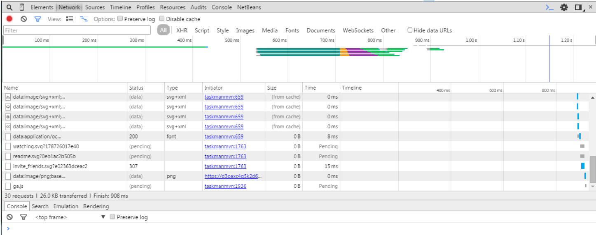
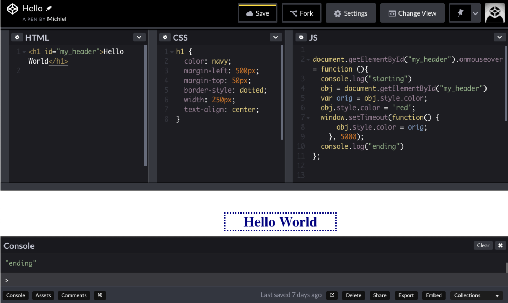

The toolbox
Intro
These are the tools we are going to use to build our dynamic web applications: Java: plain old Java to build the logic Java EE: The enterprise edition - an extension that has web apis, including Servlets. Thymeleaf: A very nice templating technology for Java web pages Tomcat: a container where the Java web apps live
Of course, you will also need (knowledge of)
Javascript: client-side scripting language to manipulate the view, and in particular jQuery: a Javascript library/platform for performing many tasks that are pretty hard to implement using raw Javascript css (cascading style sheets): to style the view
but these will not be dealt with in this course.
Java development kit
Download and install from Oracle.
The Tomcat application server
To start working with Java web technology, you have to get a server runtime. We'll use Tomcat. To install it:
- go to apache tomcat and download the latest version
- extract it in a suitable location
- make the
bin/*.shfile executable - To test, start up Tomcat using
./tomcat.../bin/startup.sh
- direct your browser to
http://localhost:8080/and you should see the Tomcat management page.
IntelliJ Ultimate
This course uses IntelliJ, but for your own endeavors you are of course free to use another IDE.
A MySQL server
A MySQL server and account. Installing and administering this is not in the scope of this course. Also, MySQL as query language is assumed to be known.
Debugging web sites
All modern browsers have extensive debugging support.
Do not use the JavaScript function alert("my debug message") but intead use console.log("my debug message")!
Use the context menu option “Inspect element” in the browser:

Use the inspector to investigate, change and track DOM structure, bugs, network traffic, styling information, print info from JavaScript, change JavaScript variables.
Codepen
Use Codepen for testing snippets:
